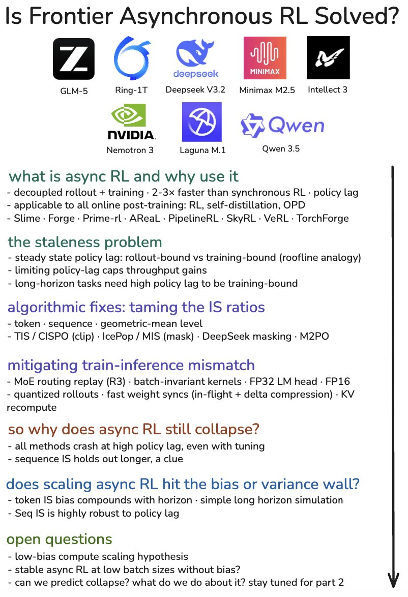

Async RL 是否已解决：policy lag、IS 偏差与后训练系统边界
这篇文章的关键不是宣布异步 RL 已经成熟，而是把大模型后训练中的吞吐、stale rollout、importance sampling、数值一致性和长 horizon 扩展放到同一个判断框架里：系统工程可以把 train-inference mismatch 压低，但高 policy lag 下的 estimator 偏差才是更硬的上限。
核心判断
这条 thread 和 blog 最值得记录的 insight 是：异步 RL 并不是“把生成和训练并行起来”这么简单。它把 on-policy RL 的干净假设换成了吞吐更高、但数据更旧的 off-policy 训练问题。
我的判断：frontier async RL 还没有被解决。当前系统侧的 weight sync、batch-invariant kernel、MoE routing replay、FP32 LM head、量化 rollout 等手段能减少训练端和推理端不是同一个 policy 的问题；但只要 policy lag 被推高，rollout trajectory 仍然来自旧策略，importance sampling ratio 的分布仍然会极端化。真正未解决的是高 policy lag、长 horizon、有限 batch 下的低偏差训练。
这也是作者为什么把主题从 infrastructure survey 推向 estimator scaling。工程系统可以把错配噪声降低；但如果 estimator 自身是高 bias 的，compute 上去以后不会自动变正确，只会更稳定地优化错目标。反过来，低 bias 方法低 compute 时可能因为 variance 暴露得更明显而显得吃亏，却有机会随着 batch size 和 variance control 扩展。
问题背景
大模型 reasoning、tool-use 和 agentic 任务把 RL 的采样成本推高。同步 RL 的每轮训练必须等当前 policy 完成 rollout，长输出会让训练 GPU 空等最慢的 trajectory。
采样和训练在一个严格循环里，必须先用当前 policy 生成样本，再进入优化。长 horizon 让 rollout latency 主导 step time。
rollout worker 持续生成，trainer 持续更新，中间用 trajectory buffer 和周期性 weight sync 解耦。吞吐提升来自不再让两端互相等待。
trainer 更新时看到的样本可能来自若干步之前的 inference policy。此时训练目标不再天然 on-policy，需要处理 off-policy mismatch。
作者把 policy lag 定义为训练 policy 相对 inference policy 领先的优化步数。K 等于 0 时是完全 on-policy；K 越大，trajectory 越旧。最直接的工程控制是设置最大 lag，例如 FIFO 窗口或丢弃超过阈值的样本，但这会直接限制异步 RL 的吞吐收益。

机制拆解
异步 RL 的核心机制可以拆成三个变量：rollout latency、training step time、以及 rollout / training 资源比例。它们共同决定系统自然积累的 steady-state lag。
生成端持续产出 trajectory，训练端持续消费 buffer。系统不再等待每一批样本完全结束后才更新。
训练端消费样本时，当前参数已经不同于采样时的参数。policy lag 越高，分布差异越大。
训练目标用当前 policy 与行为 policy 对同一 trajectory 的概率比值做重加权。ratio 越极端，梯度方差和稳定性问题越严重。
TIS、CISPO、MIS、IcePop、DeepSeek-style masking、M2PO 等方法都在重塑或丢弃极端 ratio。
关键 insight：限制 Kmax 可以稳定训练，但会把系统重新推回 rollout-bound；放开 Kmax 可以接近异步吞吐上限，但 stale trajectory 会让 estimator 崩。长 horizon 任务恰好同时需要异步吞吐和更高 policy lag，所以它是这个矛盾最尖锐的场景。
系统错配
作者把稳定性问题拆成两类：算法层面的 policy lag，以及系统层面的 train-inference mismatch。后者即使在 K 很低时也会出现，因为 rollout engine 和 training engine 往往不是同一套数值路径。
| 系统修补 | 它在修什么 | 为什么仍不够 |
|---|---|---|
| MoE routing replay | 记录 rollout 时的专家路由，在训练时复现，避免相同权重下专家选择不同。 | 它减少数值 / 路由错配，但不能让旧 policy 生成的数据变成新 policy 数据。 |
| Batch-invariant kernels | 让不同 batch size、并行策略或归约顺序下的 log-prob 更一致。 | 它解决 engine parity，不解决 policy drift。 |
| FP32 LM head / FP16 pipeline | 降低低精度舍入对 log-prob 和 IS ratio 的放大效应。 | 它压低测量噪声，但 IS ratio 极端化仍来自分布差异。 |
| Quantized rollout | 缩短生成时间，提高 rollout throughput，并配合准确 log-prob 或 TIS。 | 它提升速度，但若量化改变 policy，需要额外校正。 |
| Fast weight sync | 更快把训练权重或 delta 推到 inference 端，降低 lag。 | 它缓解 lag，但不能证明高 lag 下训练目标仍正确。 |
这组系统修补的共同价值是让 rollout policy 和 training policy 尽量指向同一个对象。它们是必要条件，却不是充分条件。只要系统为了吞吐主动允许 policy lag 存在，算法侧仍必须回答：如何在旧 trajectory 上估计新 policy 的梯度。
Estimator 分歧
作者最强的判断集中在 token-level IS 和 sequence-level IS 的分歧上。这里的问题不是哪个 trick 更平滑，而是哪一个 estimator 在 async long-horizon 场景下仍指向正确目标。
按每个 token 的概率比值做修正，方差较低，和 PPO / GRPO 的常见形式更接近。在 policy drift 小、连续策略足够近时，它可以作为实用近似。
按整条 trajectory 的概率比值做修正，更接近 off-policy 目标本身。代价是长序列下 ratio 方差可能非常高，小 batch 时尤其难用。
试图在 token 与 sequence 之间折中，用 token ratio 的几何平均控制尺度。作者的 simulation 显示它在长 horizon 下更像 token IS，而不是可靠中间地带。
通过 clip 或 mask 极端 ratio 降低 variance。它能让小 batch 更稳，却把 bias 写进目标；当 compute 增长时，bias 可能成为上限。
低偏差 compute scaling hypothesis：低 bias 方法低 compute 时暴露更多 variance，看起来不划算；但它保留了正确目标，因此更可能随 batch、compute 和 variance control 扩展。高 bias 方法小规模更稳，但扩展时会撞上 bias ceiling。
这对工程实践的启发很直接：不要只用小 batch、小 horizon 的稳定性判断一个 async RL 修补是否可扩展。低方差方法在早期曲线更漂亮，不等于它在高 compute 或长任务上有更高上限；sequence-level 方向早期更吵，也不等于它不值得做 variance control。
术语解释
异步强化学习训练形态：rollout 和 training 不再严格串行，而是通过 buffer、权重同步和版本管理并行运行。
训练 policy 相比生成样本的 inference policy 领先的优化步数。lag 越大，trajectory 越 stale。
rollout-bound 指 trainer 等样本，吞吐受生成端限制；training-bound 指 buffer 持续有样本，训练端成为主瓶颈。
当前 policy 与行为 policy 对同一 token 或 trajectory 的概率比值，用于在 off-policy 数据上重加权梯度。
训练端和推理端因为精度、kernel、并行策略、MoE 路由、tokenization 或权重版本不同，导致 log-prob 或行为不一致。
长 horizon 下 trajectory-level 概率比值容易随 token 数累乘而方差爆炸；这正是 sequence IS 难用但目标更干净的根源。
边界与风险
这篇 blog 的价值在于提出一个清晰的 async RL landscape 和 estimator scaling 判断，但它还不是最终答案。
作者整合了多个 lab 的报告和框架经验，也给出高 lag 实验与 simple horizon simulation；但不同模型、任务、reward、inference engine 的外部复现仍关键。
它低 bias，但 variance 高。小 batch、稀疏奖励、极长轨迹下，如果没有更好的 variance control，训练可能先被噪声击穿。
即使 estimator 更正确，MoE routing、kernel nondeterminism、LM head 精度、weight sync 这些工程错配仍会污染 log-prob 和 reward credit。
因此更稳妥的判断是：async RL 已经是 frontier post-training 的主流系统方向，但“高 policy lag 下的可扩展低偏差训练”仍是开放问题。下一阶段真正有价值的工作，可能不是再发明一个 mask，而是能在训练中诊断 estimator 已经偏离、并在 collapse 前动态调整 batch、lag、truncation 或 estimator 形态。
证据边界与资料索引
本页基于目标 X thread、作者链接的长文、thread 配图和评论区问题整理。X 公开页面有时只返回部分内容，因此长文内容以作者个人站页面为准。
- X 主帖：Luke J. Huang 发布的 “Is frontier asynchronous RL solved?” thread。主帖时间为 2026-06-01 18:04:43 UTC，包含 blog 摘要、配图和后续 takeaways。
- 作者长文：Is Frontier Asynchronous RL Solved?。正文覆盖 async RL landscape、policy lag、IS ratio、系统错配、sequence/token estimator 对比和开放问题。
- 短链指向：thread 中的 blog 短链指向作者个人站页面；另一个短链指向主帖图片页。
- 验证边界：未独立复现实验，结论以作者长文与公开 thread 为依据；X 公开页面只稳定返回部分内容，因此不作为唯一正文依据。